|
|||||||||||||||||||||||||||
|
|||||||||||||||||||||||||||
|
利尻岳を滑る （オチウシナイ稜） |
| 実 施 日 | ２００９年４月２４日 | |||
| リーダー | 早川（滉） | |||
| 報 告 者 | 山口 | |||
| HP制作者 | 西田 | |||
| 参加者数 | ２名 （会員２名） | |||
|
利尻岳は、国土地理院では利尻山（りしりざん）という名称がつけられているほか、「利尻富士」とも呼ばれる。 標高は1,721mで、我が国の最北で最高の山である。 |
| 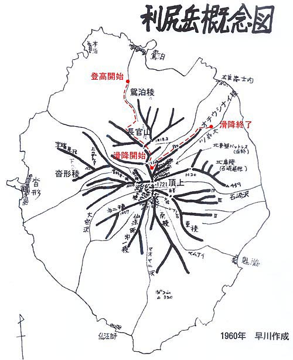 |
| 利尻岳概念図 （赤い破線はルート） |
| 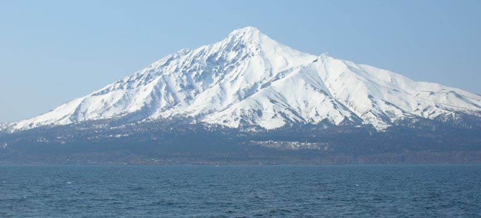 |
| フェリーから利尻岳を望む 正面がオチウシナイ稜 |
| 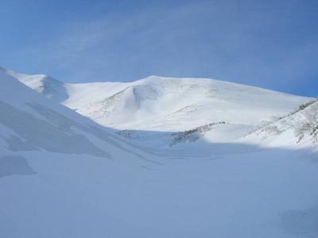 | A | 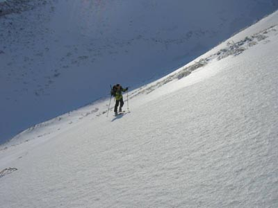 |
| 鴛泊側の谷から長官山に至る尾根を望む | スキー登行で尾根に取り付く |
| 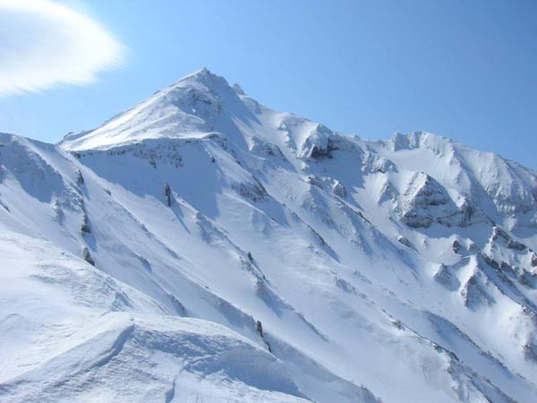 |
| 尾根上から利尻岳の西側を望む 上部の光っているのはアイスバーン、スキーを履く場所がなくて苦労した。右スカイラインは沓形稜 |
| 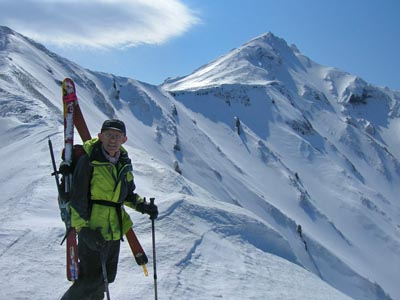 | A | 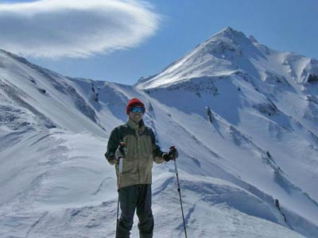 |
| 長官山への尾根にて（左 早川（滉）、右 山口） | ||
| 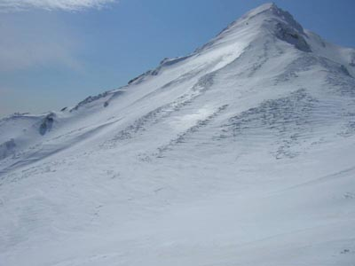 | A | 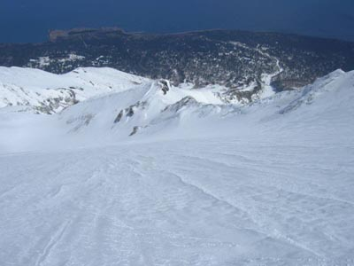 |
| 利尻岳の東北面 | 東北面の雪面から下るコースを望む |
| 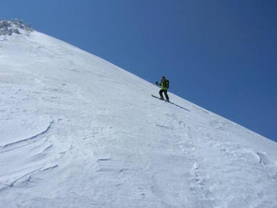 | A | 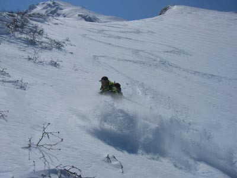 |
| オチウシナイ稜の上部を滑る | 気温も上がって前日に降った新雪が腐り始めたところを滑る |
| 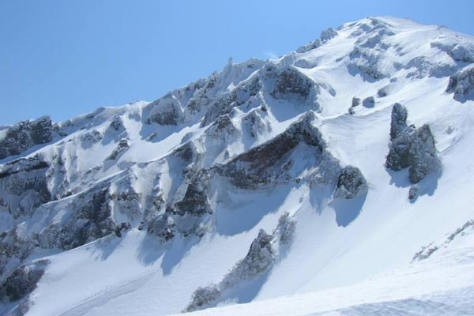 |
| オチウシナイ沢の源頭部 左スカイラインは東北稜 |
| 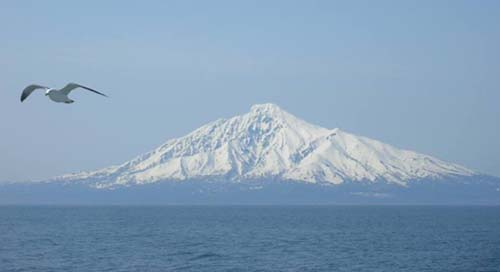 |
| 帰りの船から見た利尻岳（滑降ルートが正面に見える） |